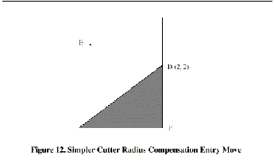

If the contour is a material edge contour and there is a convex corner somewhere on the contour, a simpler method of making an entry is available. See Figure 12.
First, pick a convex corner, D. Decide which way you want to go along the contour from D. In our example we are keeping the tool to the left of the contour and going next towards F. Extend the line FD (if the next part of the contour is an arc, extend the tangent to arc FD from D) to divide the area outside the contour near D into two regions. Make sure the center of the tool is currently in the region on the same side of the extended line as the material inside the contour near D. If not, move the tool into that region. In the example, point E represents the current location of the center of the tool. Since it is on the same side of line DF as the shaded triangle, no additional move is needed. Now write a line of NC code that turns compensation on and moves to point D
|
N0010 G41 G1 X2 Y2 (turn compensation on and make entry
move)
This method will also work at a concave corner on a tool path contour, if the actual tool is oversized, but it will fail with a tool path contour if the tool is undersized.
|
|

|